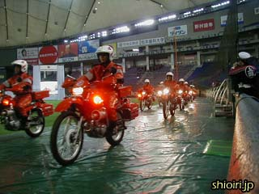
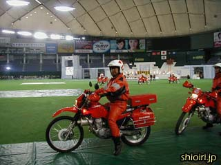
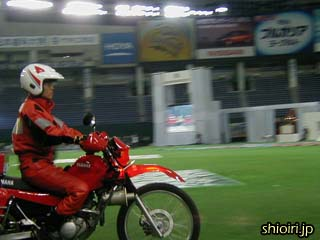
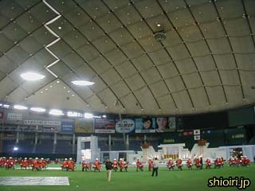

上田を朝７時に出発し、宿舎の新高輪プリンスホテルには午前中に到着。新しい品川駅のスターバックスでちょっと気取ったランチを食べ、余裕のスケジュールでドーム入り。
ほどなくして、同行していたバイク隊のリハーサルが始まりました。 |
|  |
今回、５５周年を記念して、５５台の赤バイが全国の消防団に配備されますが、このうち３台が上田市消防団に配備されることになっています。 |
|  |
同級生、あっちゃん！
日立市消防団の赤バイに乗っていました。ライダースーツがちょっとキツそう。 |
|  |
福沢副本部長も決まってるぅ！
今回の展示走行には、上田市消防団バイク隊から１５名の隊員が参加しました。 |
|  |
５５台の赤バイがきれいに並びました。大型スクリーンの合図で、エンジン停止、降車、敬礼のタイミングをとっています。 |
≪前のページ |
次のページ≫ |